折腾了好久，终于好了，参考了很多残缺不全的教程，配置过程中遇到了很多问题！
0x01 环境介绍
- 虚拟机软件：VMware Fusion
- 调试机：Windows 7 x64
- 被调试机：15PB信息安全实验环境-Windows7(32)
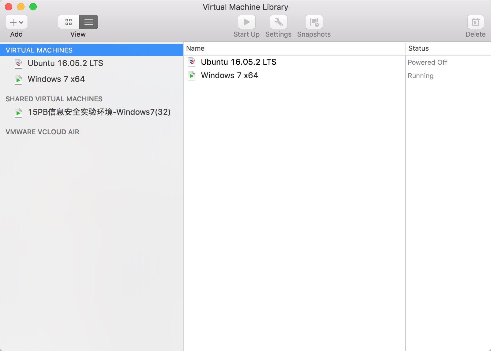
被调试的虚拟机15PB信息安全实验环境-Windows7(32)是放在固态移动硬盘里面的，这个虚拟机是用Windows的VMware创建的虚拟机，所以没有和其他虚拟机分类在一起
0x02 配置两个虚拟机的串行端口
首先需要给调试机和被调试机配置一个串行端口用来通讯，找到虚拟机的vmx文件
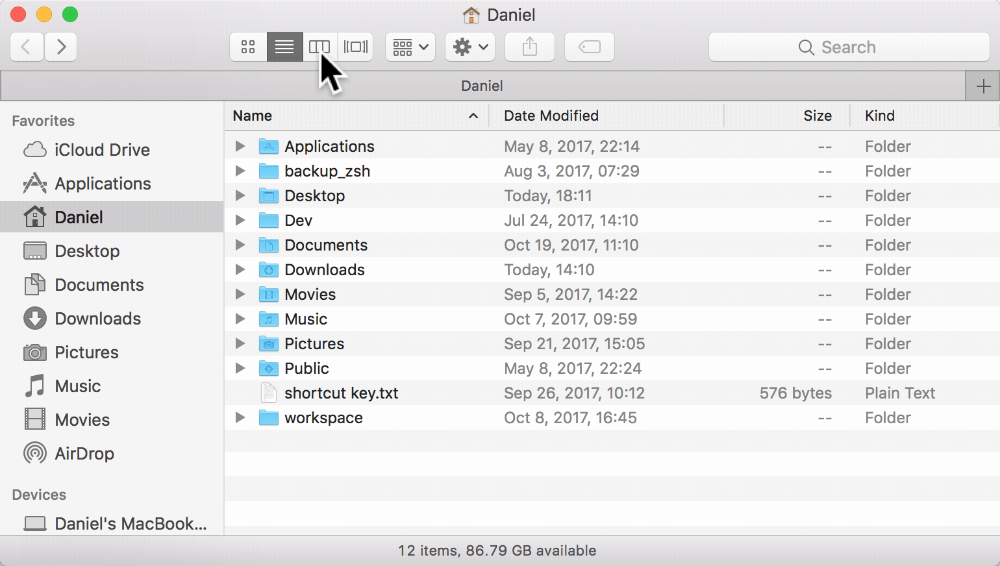
右键使用文本编辑工具打开.VMX文件，然后追加下面的几行配置串行端口
调试机器 - Windows 7 x64
serial1.present = "TRUE"
serial1.fileType = "pipe"
serial1.startConnected = "TRUE"
serial1.fileName = "/private/tmp/serial"
serial1.tryNoRxLoss = "FALSE"
serial1.pipe.endPoint = "client"
被调试机器 - 15PB信息安全实验环境-Windows7(32)
serial1.present = "TRUE"
serial1.fileType = "pipe"
serial1.fileName = "/private/tmp/serial"
serial1.tryNoRxLoss = "FALSE"
serial1.pipe.endPoint = "server"
配置好刚才的信息以后，可以启动两个虚拟机了，开机后，右击我的电脑->管理->设备管理器->端口
找到下面的com1，右键属性->端口设置，波特率改成115200
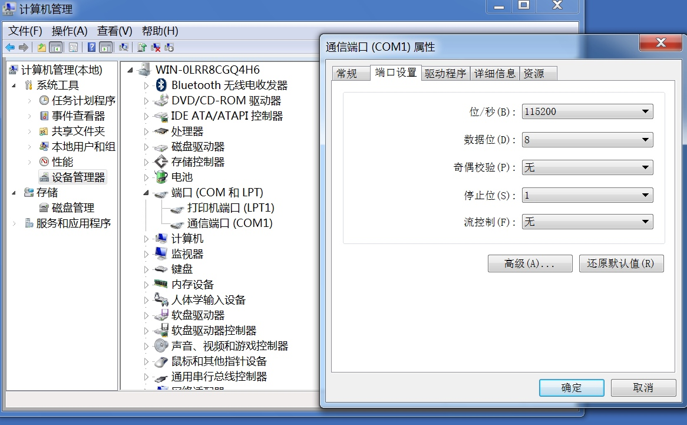
上面修改波特率，两个虚拟机都要改。
0x03 添加开机引导项
进入
被调试虚拟机添加开机引导向
这里网上很多人说修改C://boot.ini 这个文件，但是我的windows7系统没有这个引导文件，所以我们使用系统自带的DOS命令bcdedit来添加引导。
以管理员权限打开CMD，然后输入依次输入下面几条命令
bcdedit /copy {current} /d "Windwos7"
bcdedit /debug ON
bcdedit /bootdebug ON
bcdedit /timeout 10
查看当前调试配置
bcdedit /dbgsettings
0x04 设置被调试机的Kernel Debug连线
进入被调试虚拟机
在运行窗口，输入msconfig，会打开系统配置窗口，然后选择我们刚才新创建的引导，点击高级选项按钮
在弹出的引导高级选项窗口，勾选上调试，选择我们刚才设置好的COM Port
和波特率
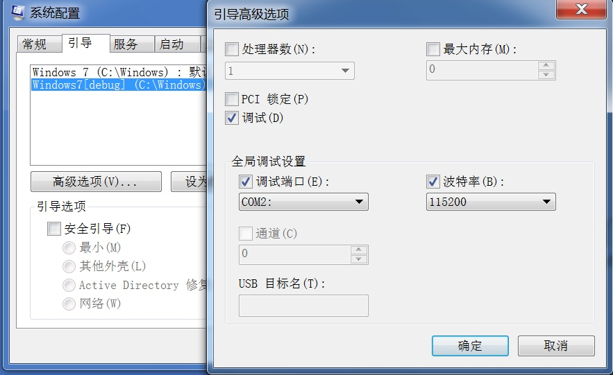
0x05 在DebuggerVM上调试Debuggee的内核
进入调试机
打开WinDBG，选择Kernel debug 或使用快捷键Ctrl+K，输入对应的Port，波特率输入115200
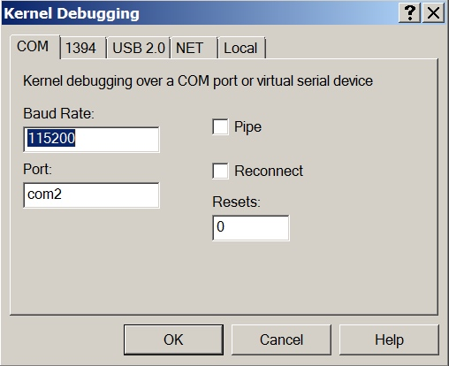
点击OK后，WinDBG出现等重新待连接字样
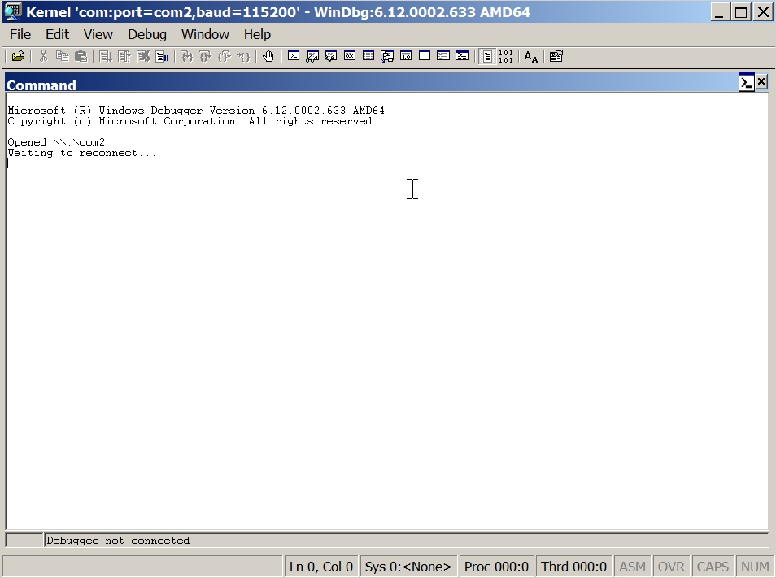
这时候可以重启被调试机器，重启的时候选择我们创建的引导启动项
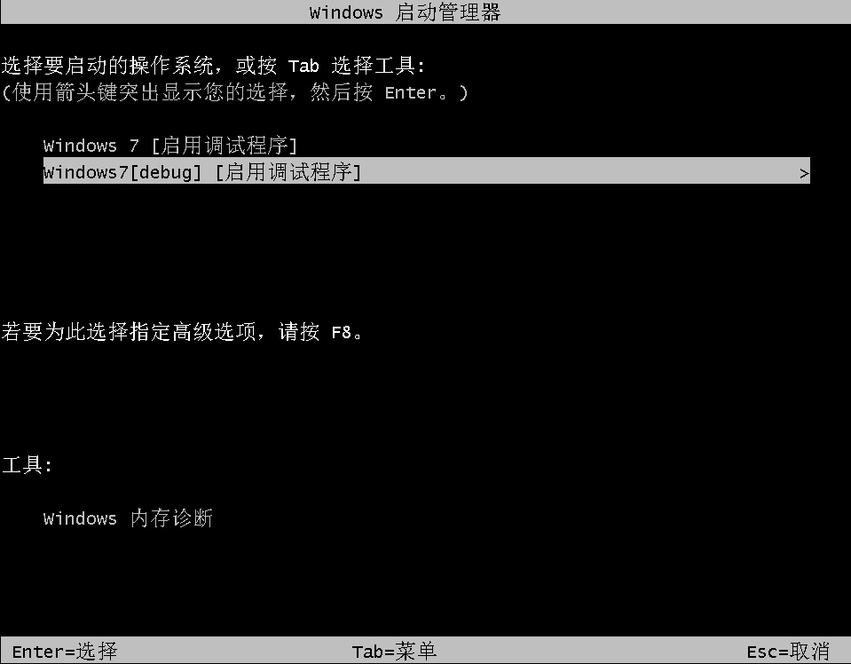
然后会卡在这个界面
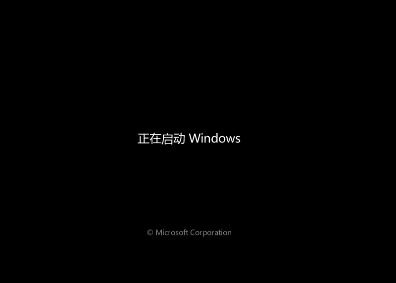
这时候我们的调试机的WinDBG已经有一些反应了！
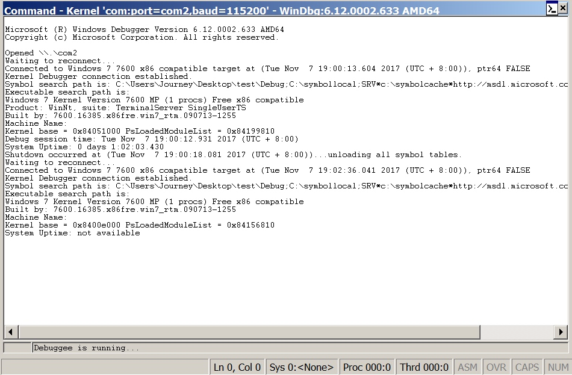
虽然显示not avaliable，多等待几秒，就会出现连接成功，
连接成功会出现Kernel Debugger connection established. 字样
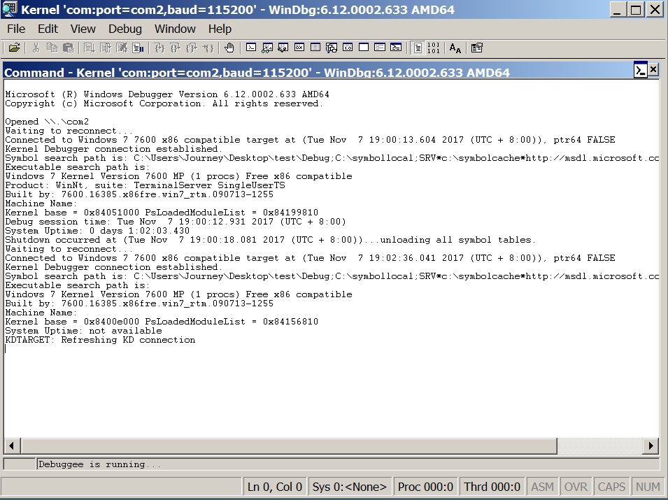
这时候已经可以双机调试啦，按F5启动被调试机吧~
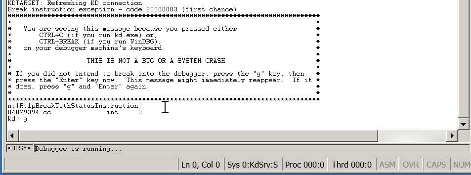